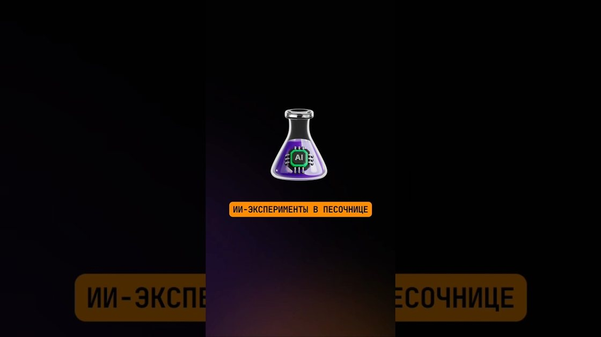
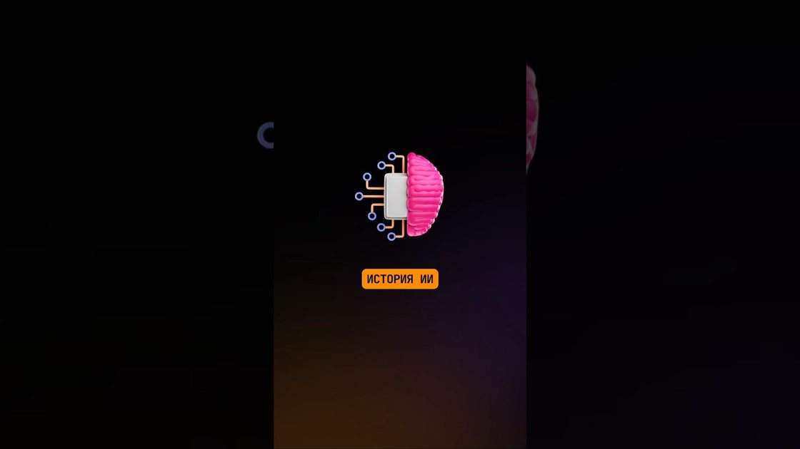
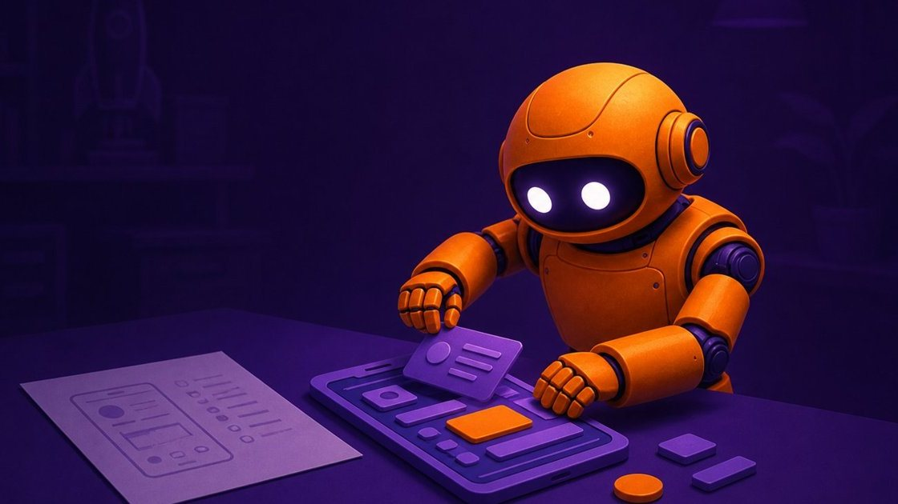
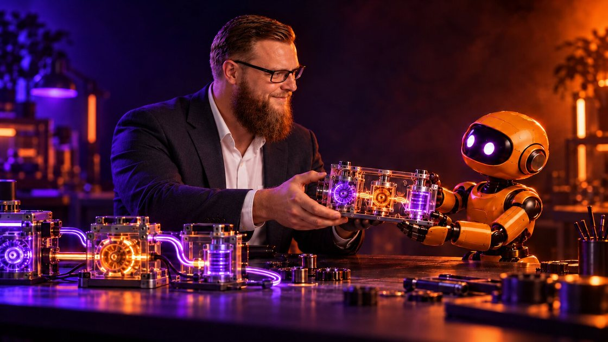
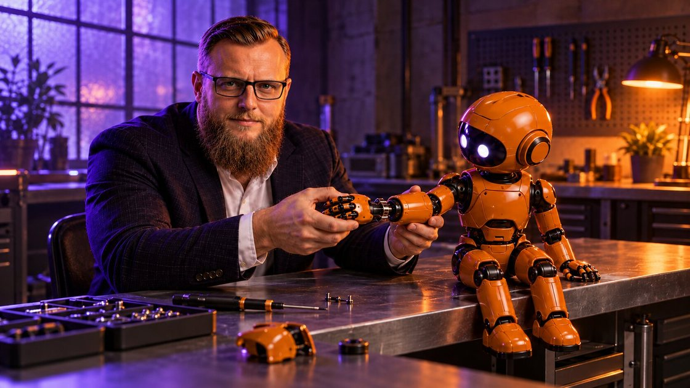

ChatGPT и Claude уже создают приложения прямо в чате. Зачем теперь делать стартапы?
OpenAI и Anthropic в последнее время выпускают столько обновлений, что возникает вопрос: за что брать деньги, если ИИ создает приложения по запросу?
 Anthropic выходит на биржу, а GTA VI доказывает: эффективность — не добродетель
Anthropic выходит на биржу, а GTA VI доказывает: эффективность — не добродетель ИИ решил самую знаменитую задачу математики. Теперь людям трудно понять доказательство
ИИ решил самую знаменитую задачу математики. Теперь людям трудно понять доказательство Дженсен Хуанг вернулся на пост гендиректора Nvidia
Дженсен Хуанг вернулся на пост гендиректора Nvidia Amazon покупает ИИ-технологию Decart за $7,5 млрд накануне продажи чипов Trainium
Amazon покупает ИИ-технологию Decart за $7,5 млрд накануне продажи чипов Trainium Sierra удвоила оценку до $30 млрд за полгода на фоне бума ИИ в клиентском сервисе
Sierra удвоила оценку до $30 млрд за полгода на фоне бума ИИ в клиентском сервисе Исследование Anthropic: сложнее всего внедрять ИИ на работе не из-за обучения работе с инструментами
Исследование Anthropic: сложнее всего внедрять ИИ на работе не из-за обучения работе с инструментамиСуществует два типа компаний: AI-First-компании — и их клиенты. Первые перестраивают весь бизнес вокруг ИИ-агентов. Вторые продолжают масштабировать штат и покупать результат у первых. А к какому типу относится ваша компания?
 AGI уже близко? 10 последних исследований, которые меняют наш мир
AGI уже близко? 10 последних исследований, которые меняют наш мир Топ-30 исследований, которые меняют всё | ИИ-революция
Топ-30 исследований, которые меняют всё | ИИ-революция Собираем личного бизнес-ассистента в Telegram с n8n
Собираем личного бизнес-ассистента в Telegram с n8n Как ИИ-агенты захватили Minecraft #ИИ #AI
Как ИИ-агенты захватили Minecraft #ИИ #AI
Как ИИ-агенты устраивают вечеринки? #ИИ #AI
История развития искусственного интеллекта #ИИ #AI
Привет! Это Датаист — всё главное об ИИ за неделю в одном выпуске: топ новостей недели, новые видео и статьи, свежие исследования из Лаборатории и уроки Академии. Устраивайтесь поудобнее.
OpenAI и Anthropic в последнее время выпускают столько обновлений, что возникает вопрос: за что брать деньги, если ИИ создает приложения по запросу?


Обычные игровые ИИ-агенты управляют игрой ход за ходом, а языковая модель подсказывает им действия. Coding4Games проверяет другой подход: может ли агент изучить игру и написать программу, которая будет играть самостоятельно — без модели во время проверки.
Агент видит игру через скриншоты, управляет клавиатурой и мышью, пишет код и пробует его в песочнице. Затем программу замораживают и запускают в отдельной среде, где она проходит испытания без подсказок ИИ. В бенчмарке — 15 современных игр.
Читать разбор → Исследование
ИсследованиеРаспознать сгенерированные ИИ-видео трудно, когда дефект спрятан в одном кадре, коротком движении или надписи. WeVisForensics проверяет ролик по отдельным признакам: главный агент выбирает специалиста и момент видео, а затем собирает свидетельства для вердикта.
Читать разбор → Исследование
ИсследованиеОбычно ИИ-агентов учат играть на видео или примерах действий, но по ним не всегда понятно, приблизился ли игрок к цели. Game2Player превращает веб-игры в задачи с измеримым прогрессом и проверяет игровые среды, прежде чем использовать прохождения для обучения.
Читать разбор →
ИсследованиеДлинная задача по программированию — это не только написать код: нужно собрать проект из множества частей и добиться, чтобы он работал. RepoFactory превращает реальные репозитории в учебные задания: агент должен воссоздать проект по описанию, не видя исходного кода.
Читать разбор → Исследование
ИсследованиеМодель может понимать команду «принеси красную чашку», но в физическом мире ей нужно ещё найти предмет, выбрать действие и проверить, получилось ли. Вместо отдельных политик для каждого класса задач авторы предлагают агентную робототехнику: универсальная модель планирует действия, вызывает инструменты и оценивает результат.
Читать разбор → Исследование
ИсследованиеУбедительное видео ещё не означает, что модель понимает происходящее: мяч может исчезнуть за спиной персонажа и появиться в другом месте. Авторы предлагают считать систему моделью мира, только если она сохраняет состояние среды и обновляет его после действий и новых наблюдений; для сравнения таких систем они создали открытую инфраструктуру WorldFoundry.
Читать разбор →Сегодня ИИ обычно оценивают по тому, что он умеет сделать сам. Хао Фэй предлагает дополнить эту меру: оценивать, насколько ИИ усиливает конкретного человека. Для этого в статье введено понятие «когнитивного симбионта» — персонального помощника, который помнит историю человека и помогает в подходящий момент.
Читать разбор →
Допустим, клиент попросил изменить адрес доставки. Агент сохранил новый адрес, тест пройден.
Но вместе с адресом он поменял способ оплаты, а проверка этого не заметила.
Открыть урок →
Агент может правильно понять задачу и всё равно выполнить её дважды.
Открыть урок →Представим: клиент просит перенести доставку. Агент находит заказ, проверяет условия и предлагает варианты.
Открыть урок →
Недавно я создавал агента-оркестратора, который использовал другие воркфлоу в качестве инструментов. Агент выбирал, какой процесс запустить, а выбранный воркфлоу выполнял последовательность действий и возвращал результат.
Открыть урок →
В одной компании я создавал агента-оркестратора, который использовал другие воркфлоу в качестве инструментов.
Открыть урок →
Можно подключить ИИ-агента к любой системе, но само подключение ещё мало говорит о том, насколько хорошо агент будет выполнять задачу.
Открыть урок →
Мой подход к архитектуре агента простой: сначала нужно разложить бизнес-задачу на атомарные операции и понять, где нужно самостоятельно выбирать следующий шаг, а где шаги заранее понятны. После этого уже выбирать модель, писать промты и подключать инструменты.
Открыть урок →Единый контекст бизнеса, ИИ-суперагент и 100 готовых ИИ-сотрудников в десяти отделах — от целей и задач до продаж, поддержки и кода.
Попробовать бесплатно →